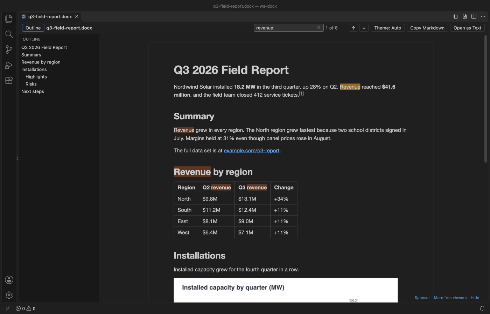
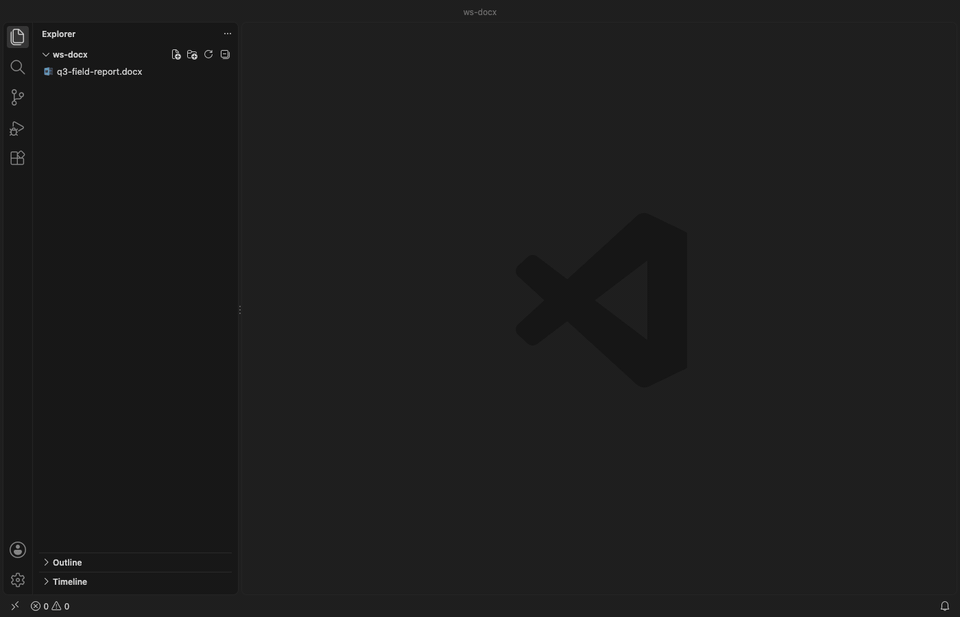
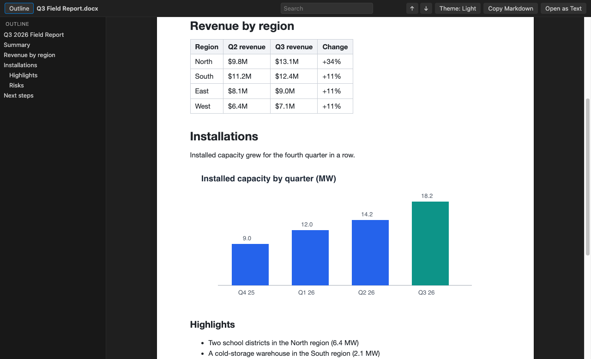
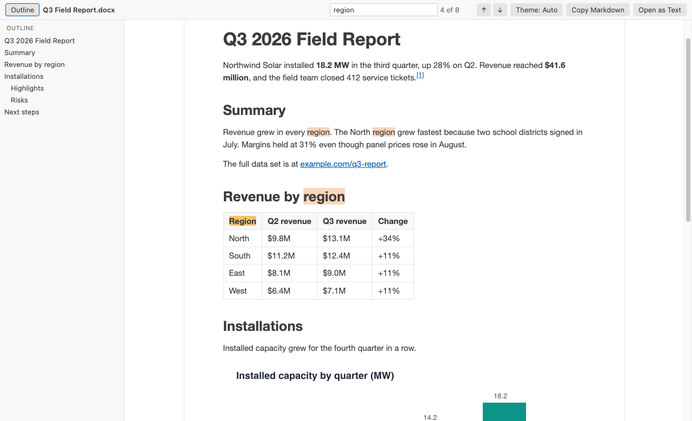
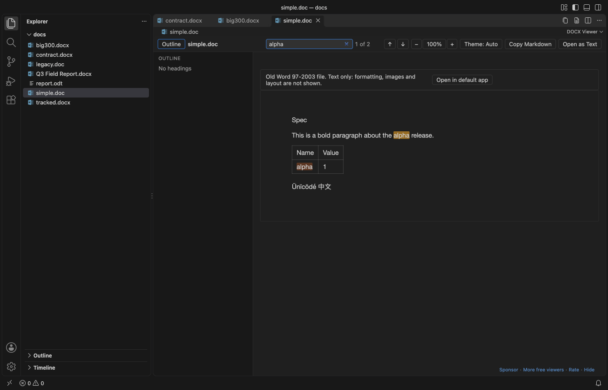
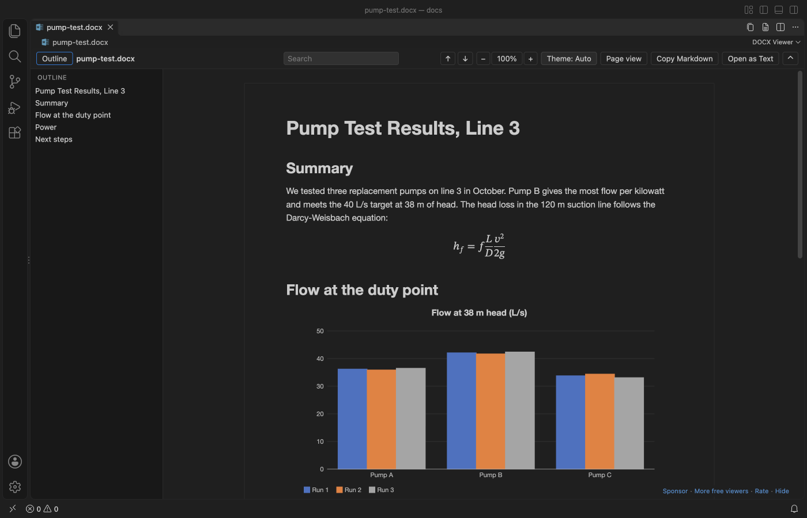
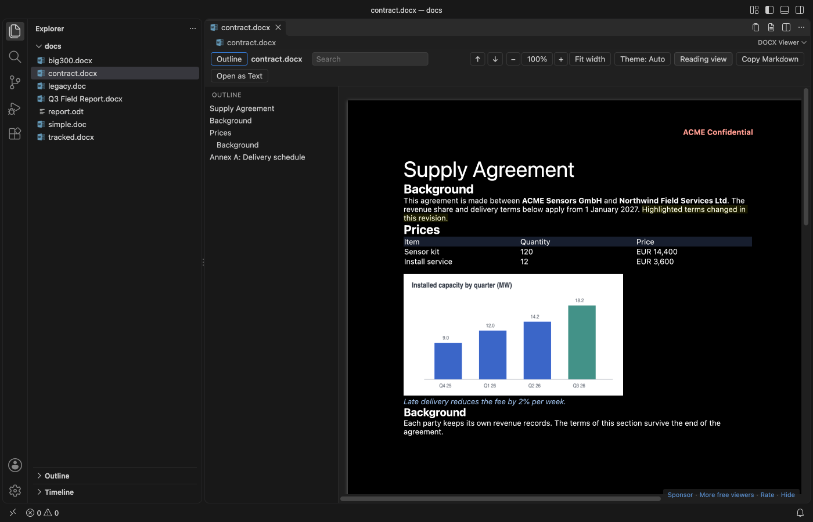
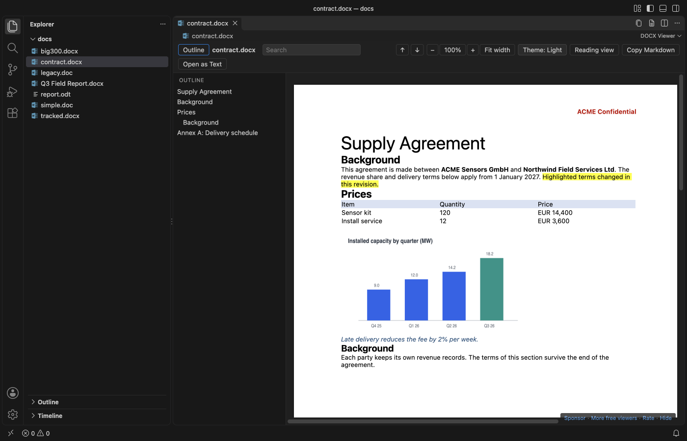
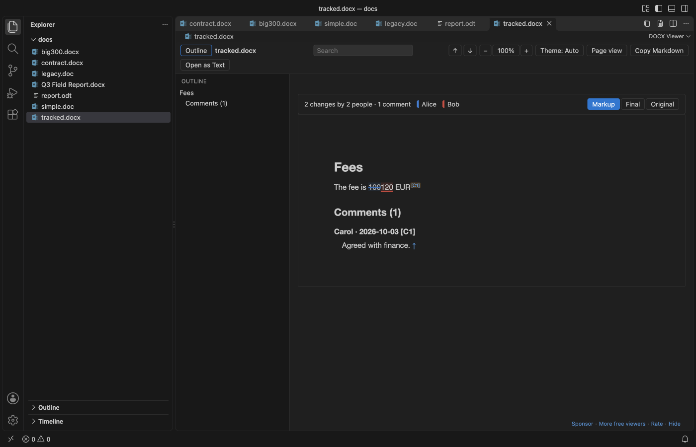

DOCX Viewer & ODT Viewer, Word Document Preview (Dark Mode)
DOCX Viewer & ODT Viewer, Word Document Preview (Dark Mode), a VS Code extension by Zovo
For developers who get specs, contracts and reports as Word files, DOCX Viewer opens .docx, .odt and old .doc files in VS Code as a dark-mode preview with an outline, search, tables, charts and equations.
Free, MIT license. Needs VS Code 1.90.0 or newer. Extension ID zovo.docx-viewer-vscode, version 0.3.3.

A real VS Code 1.142 window running this extension on test/fixtures/sample.docx, a generated 2 page field report with a table and a chart.
- Read Word and OpenDocument (.odt) specs, contracts and reports next to your code. The page follows your VS Code theme, or switch to white paper with one click.
- Find things fast. Search shows a match count, and the outline jumps to any heading.
- See what changed. Compare a document with its last Git commit, or with another version, in the VS Code diff view. Or copy the whole document as Markdown with tables and footnotes.
- Open big real-world files. A 47 MB government report with 41 photos opens in about 1.5 seconds, and Page view lays it out in under half a second. The preview reloads when the file changes on disk. The whole extension is a 0.8 MB download and needs no Office or LibreOffice.
- Works in the browser too. In vscode.dev and github.dev, click a .docx in a GitHub repository and read it without cloning.
New in 0.3.2
- EMF, WMF and TIFF pictures show in both views. Visio drawings, Excel charts pasted as pictures, old Equation Editor and MathType equations and scanned TIFF pages used to be a grey placeholder. The viewer now draws them itself, offline, and a picture it can't draw gets a short note that says why.
- Shift + mouse wheel scrolls sideways in Reading view, as it already did in Page view.
Quick start
- Install DOCX Viewer.
- Click any
.docxor.dotxfile in the Explorer. It opens as a read-only preview. PressCtrl+F(Cmd+Fon macOS) to search.

Recorded in the same window. The white arrow is drawn in to show where each click lands.
No .docx at hand? Run "DOCX Viewer: Open Sample Document" from the Command Palette.
Questions people ask
Is DOCX Viewer & ODT Viewer, Word Document Preview (Dark Mode) free?
Yes. DOCX Viewer & ODT Viewer, Word Document Preview (Dark Mode) is free and MIT licensed.
How do I install DOCX Viewer & ODT Viewer, Word Document Preview (Dark Mode)?
Click "Install in VS Code" above, or search for zovo.docx-viewer-vscode in the Extensions view.
What it shows
Headings, paragraphs, bold, italic, underline and strikethrough. Bulleted and numbered lists, including nested ones. Tables with merged cells. Images inline: PNG, JPEG, GIF, BMP and WebP, plus EMF, WMF and TIFF, which the viewer draws itself (see Limits). Equations and charts (see below). Figure and table numbers. Footnotes and endnotes, with links between the reference and the note. Hyperlinks, which open in your browser.
It reads .docx, .dotx (templates) and .docm files, and OpenDocument text files (.odt and .ott templates) from LibreOffice, Google Docs downloads and pandoc. Macros in .docm files never run. The viewer only reads the text and images.
Old Word 97-2003 .doc and .dot files open as text. You get the paragraphs, simple tables, and the headers, footers, footnotes, comments and text boxes in their own sections. A grey bar says that formatting, images and layout are not shown, with a button to open the file in your default app. Search, Copy as Markdown, Open as Text and both compare commands work on them. An old .doc file renamed to .docx or .docm opens the same way. Many websites publish RTF files with a .doc name; those open as text too, with their tables. A password-protected file gets a short message that says so, and so does an HTML file saved with a .doc name.



Equations and charts
Word equations show as real math in Reading view: fractions, roots, sub- and superscripts, sums and integrals with limits, brackets, matrices and equation arrays. Copy as Markdown and Open as Text write them as one line of text, such as x=(-b±√(b^2-4ac))/(2a).
Charts are drawn again from the numbers Word saves inside the file, so you see them without Excel: column, bar, line, area, pie, doughnut and scatter charts, with the title, the legend and a value on hover. "Chart data" under each chart opens its table, and Copy as Markdown copies that table.

Page view
Click "Page view" in the toolbar to see the document the way Word lays it out. You get the page size and margins, portrait and landscape pages, headers and footers, fonts, colors, highlights, table borders and shading, and footnotes. "Reading view" switches back. VS Code keeps your choice for the workspace, and docxViewer.defaultView sets it for new ones.


- Zoom goes from 50% to 300% with the minus and plus buttons, or
Ctrl+=andCtrl+-(Cmdon macOS).Ctrl+0goes back to 100%, and "Fit width" fits the widest page to the window. Reading view zooms the same way. - In a dark theme the pages turn dark too, and photos and charts keep their colors. The theme button switches to white paper.
- The outline and search work on the pages, and search also finds text in headers and footers.
- Page view opens
.docx,.dotxand.docmfiles. Files over 100 MB (docxViewer.pageViewMaxMB) open in Reading view, with a button to try Page view anyway. If a file can't be laid out, it opens in Reading view with a one-line note.
Tracked changes and comments
When a .docx has tracked changes or comments, a bar at the top of Reading view counts them, for example "12 changes by 2 people · 4 comments". Markup underlines insertions and strikes through deletions in one color per author, and when you hover a change you see who made it and when. Comments get small numbered markers and a Comments section at the end with the author and date.
"Final" shows the document as if every change were accepted, and "Original" as if every change were rejected. Copy as Markdown, Open as Text and the compare commands always use Final. The viewer only reads the file, so nothing gets accepted or rejected in it.

Compare versions
Word files are binary, so git diff shows nothing useful for them. Right-click a .docx or .odt file in the Explorer or in Source Control and pick "Compare with Git HEAD". Both versions are turned into Markdown and open in the VS Code diff view, with changed words, table rows and headings marked. It's also in the ... menu of the viewer.
To compare two files, select both in the Explorer and pick "Compare with Another Document...", or run it on one file and pick the second. A .docx can be compared with an .odt.
Git runs on your machine with hooks and fsmonitor turned off, and only in a trusted workspace. The compare shows text and structure. Changes to fonts, colors or images alone don't show.
Commands
| Command | What it does |
|---|---|
| "DOCX Viewer: Find in Document" | Puts the cursor in the search box (Ctrl+F / Cmd+F) |
| "DOCX Viewer: Copy as Markdown" | Copies the whole document as Markdown |
| "DOCX Viewer: Open as Text" | Opens the plain text in a new untitled editor |
| "DOCX Viewer: Open as Markdown" | Opens the Markdown in a new untitled editor |
| "DOCX Viewer: Open in Default App" | Opens the file in Word, Pages or LibreOffice |
| "DOCX Viewer: Compare with Git HEAD" | Shows what changed since the last commit, as a Markdown diff |
| "DOCX Viewer: Compare with Another Document..." | Shows the differences between two documents, as a Markdown diff |
| "DOCX Viewer: Show or Hide the Toolbar" | Hides the toolbar for more reading room, and shows it again (Ctrl+Shift+H / Cmd+Shift+H in the viewer). The small button at the top right also brings it back. |
| "DOCX Viewer: Open Sample Document" | Opens a short sample report |
| "DOCX Viewer: Support the developer" | Opens the GitHub Sponsors page |
| "DOCX Viewer: More free viewers" | Lists the other Zovo extensions and installs the one you pick |
"Copy as Markdown", "Open as Text" and the two compare commands are also in the Explorer right-click menu for .docx, .odt and .doc files, so you can grab the text without opening the preview.
In the search box, Enter goes to the next match and Shift+Enter to the previous one. Esc clears it.
Settings
| Setting | Default | Meaning |
|---|---|---|
docxViewer.theme | auto | auto follows VS Code, light shows white paper, dark a dark page |
docxViewer.defaultView | reading | page opens Word files in Page view in new workspaces. The toolbar switch is kept per workspace. |
docxViewer.zoom | 1 | Zoom for both views, from 0.5 to 3 |
docxViewer.fontFamily | empty | Font for Reading view. Empty keeps the Word-like default, editor uses your editor font, or give a font list such as Georgia, serif |
docxViewer.pageViewMaxMB | 100 | Bigger files open in Reading view, with a button to try Page view anyway |
docxViewer.maxFileSizeMB | 100 | Bigger files ask before they open |
docxViewer.maxImageSizeMB | 20 | Bigger images show a placeholder instead |
docxViewer.maxTotalImagesMB | 300 | After this many MB of images, the rest show placeholders |
docxViewer.askForRating | true | Ask for a Marketplace rating after 3 files opened without an error on 2 different days. "Later" asks one more time after 7 days, "No thanks" never again. It never asks after an error. Turn it off with false. |
docxViewer.showSupportLinks | true | Show the small Sponsor and More free viewers line at the bottom right of the viewer. Turn it off with false. |
Big files
The converter runs in a worker thread with a memory cap and a 60 second limit, so a huge or broken file can't freeze VS Code. Pictures go to the viewer as raw bytes instead of text, which keeps big reports fast. The page fills in from the top in chunks of about 200 KB of HTML, and you can read the first screen while the rest arrives.
Measured in a real VS Code 1.142 window on an Apple M3 Pro, from the click in the Explorer to the finished page:
| File | 0.2.5 | 0.3.0 |
|---|---|---|
| 47 MB government report, 41 photos, 31 headings | 4.1 s, 6 photos left out | 1.4 to 1.6 s, all 41 photos |
| Same report in Page view | Reading view only (over 20 MB) | 0.4 s, 41 photos |
| 475 KB report with 39,000 words | 1.9 s | 1.8 to 1.9 s |
We test each release on 17 real-world files from public sources (Apache POI bug reports, a JNCC survey report, a gov.uk statistics file), including broken, password-protected and renamed files.
Privacy
DOCX Viewer works offline. It makes no network calls and sends no telemetry. The webview runs under a strict Content Security Policy with no remote scripts and no network access, and the document HTML is rebuilt from an allowlist with all text escaped before it reaches the page. Remote images, scripts and javascript: links in a document are dropped. Page view allows inline styles, which the page layout needs, and blocks the rest the same way.
Limits
- It's a viewer. It can't edit or save a document.
- Reading view simplifies the layout. It leaves out page size, margins, headers, footers, columns, text boxes, fonts and colors, so the text reads like a clean web page. Page view shows them.
- Page view doesn't show tracked changes or comments. It says so and offers Reading view.
- SmartArt doesn't show. Excel 2016 chart types (waterfall, treemap and others) show the picture Word saved with them, if there is one. Page view draws equations its own way and shows charts only as their saved picture. Tracked changes to paragraph marks, formatting and table rows show as in Final.
- EMF and WMF pictures are drawn from their plain records. An EMF that has only EMF+ records (rare, some newer Office add-ins write them) shows a note instead. TIFF pictures show their first page; JPEG 2000 TIFFs show a note. A picture over
docxViewer.maxImageSizeMB, an EMF or WMF with more than 200,000 records and a TIFF page over 40 megapixels show a note too. .docfiles show text only. Some.docfiles that macOS TextEdit ortextutilsaved at more than about 2.4 MB can't be read and get the could-not-read message.- Search finds text inside one formatting run. A word whose letters have mixed formatting may not match.
- In VS Code for the Web (vscode.dev, github.dev), "Compare with Git HEAD" and "Open in Default App" are not available. To use them, open the folder in desktop VS Code.
- In Markdown, images become placeholder links such as
to keep the text small. - In
.odtfiles, styles set by name in the document (Title, Quotations, Preformatted Text) and direct bold, italic, underline, strikethrough and superscript show. Other paragraph styles, frames and drawings are simplified. SVG and linked images show a placeholder. OpenDocument spreadsheets and presentations don't open. Tracked changes and comments in.odtfiles are not shown.
Credits
The .docx conversion uses mammoth (BSD-2-Clause). Page view uses docx-preview (Apache-2.0), and .doc files are read with word-extractor (MIT). WMF pictures are drawn with WMFJS from rtf.js (MIT) and TIFF pictures are read with UTIF.js (MIT). The EMF drawing code is part of this extension. The .odt reader is part of this extension and uses JSZip (MIT) and @xmldom/xmldom (MIT), which mammoth already bundles. See THIRD-PARTY-NOTICES.md for every bundled package and its license.
License
MIT
Guides
Install DOCX Viewer & ODT Viewer, Word Document Preview (Dark Mode)
Click the button to open VS Code and install it, or press Ctrl+P (Cmd+P on macOS) in VS Code and run ext install zovo.docx-viewer-vscode.
Free, MIT license. Needs VS Code 1.90.0 or newer. Extension ID zovo.docx-viewer-vscode, version 0.3.3.
Source code and issues are on GitHub.
Support this work
If this extension saves you time, you can support the work on GitHub Sponsors. Monthly tiers start at $5, and one-time tiers start at $15. Sponsorship is optional, and the tool works the same without it.